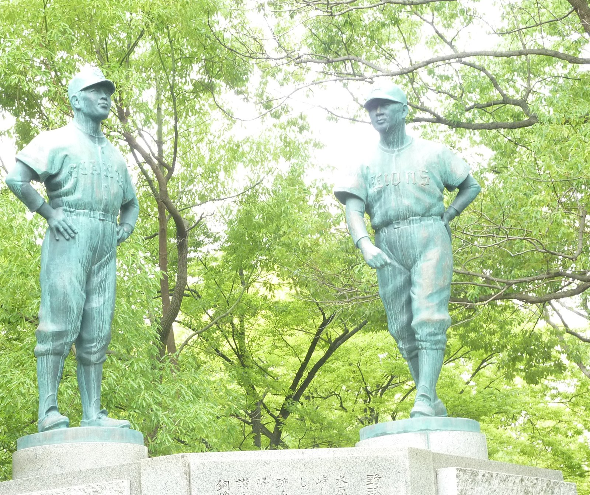

三原 脩（みはら おさむ）
高松中学 昭和4年卒
(Last updated:2014)

左・水原茂 右・三原脩
（高松市立中央公園）
プロフィール
1911年、香川県仲多度郡で生まれる。
丸亀中学に入学し野球にのめり込むが、官吏になることを望んだ父親の意向で高松中学への転校を申請する。
そのころ、高松中学の校長（今井精一校長と思われる）は文武両道を推進しており、野球部入部を条件に転入が認められた。
高松中学では遊撃手として投手の梶原英夫らと共に夏の甲子園に出場。準決勝まで進出したが、雨天コールドで敗退。
早稲田大学入学し、１年からレギュラーとして活躍。
1934年プロ野球第1号としてプロ契約。
現役引退後、巨人、西鉄、大洋、近鉄、ヤクルトの各球団監督を歴任し、知将として名声を博す。
西鉄監督時代には、1956年から3年連続で巨人と日本シリーズで対戦し、いずれも日本一に輝く。とくに、1958年の日本シリーズで、西鉄は第1戦から3連敗したが、稲尾が連投して4連勝したことは有名。
1983年野球殿堂入り。
長女の夫が中西太。
高松商業卒業の水原茂とは、武蔵・小次郎にも譬えられた永遠のライバルであり、高松市立中央公園には2人が並んで立つ銅像が建立されている。